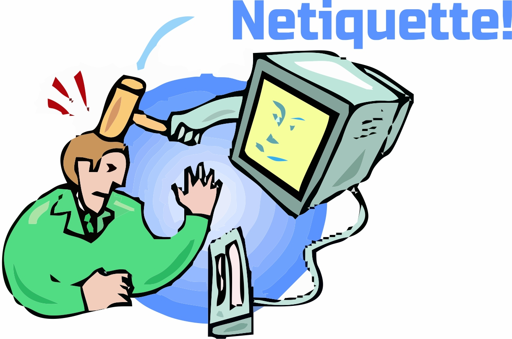
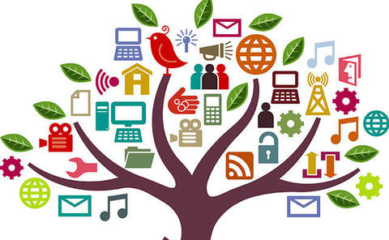
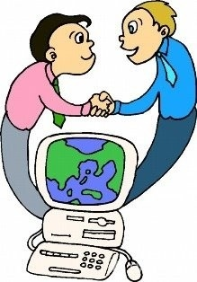
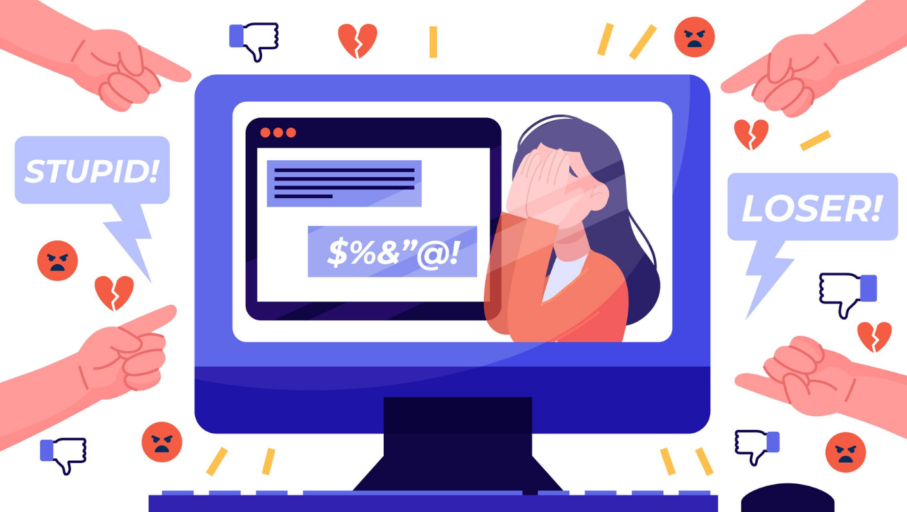

La netiquette è una parola macedonia che unisce il vocabolo inglese network (rete) e quello francese étiquette (buona educazione). È un insieme di regole informali che disciplinano il buon comportamento di un utente sul web di Internet, specie nel rapportarsi agli altri utenti attraverso risorse come newsgroup, mailing list, forum, blog, reti sociali o email in genere. Il rispetto della netiquette non è imposto da alcuna legge, ma sotto un aspetto giuridico, la netiquette è spesso richiamata nei contratti di fornitura di servizi di accesso da parte dei provider.
Il mancato rispetto della netiquette comporta una generale disapprovazione da parte degli altri utenti della Rete, solitamente seguita da un isolamento del soggetto "maleducato" e talvolta dalla richiesta di sospensione di alcuni servizi utilizzati per compiere atti contrari a essa (di solito l'email e Usenet). In casi di gravi e continue violazioni l'utente trasgressore è punibile con il ban.
Sono comportamenti contrari alla netiquette, e talvolta sanzionati dagli abuse desk: inviare spam, effettuare mailbombing e l'eccessivo cross-posting e/o multiposting sui newsgroup di Usenet. Anche l'invio di e-mail senza un oggetto è considerata una cosa poco rispettosa nei confronti del destinatario.

Le regole ufficiali
La normativa della netiquette è stata fissata in una forma definitiva dall'ottobre 1995 con il documento RFC 1855 che contiene tutte le regole ufficialmente e universalmente riconosciute dai netizen per un buon uso della rete e il documento RFC 2635 che riguarda le regole relative allo spam.
Molte delle regole possono avere serie ripercussioni: l'ingiuria e la diffamazione, pur per via telematica, o lo spamming possono, per esempio, costituire i reati di cui agli artt. 594 e 595 c.p. da un lato e 660 c.p. dall'altro. A ogni modo, pur mancando nella maggior parte dei casi un carattere giuridico, molti ambiti telematici prevedono un vero e proprio sistema sanzionatorio che può addirittura condurre all'esclusione da gruppi o liste.
Malgrado le apparenze, non costituisce soltanto una forma di "buona educazione" adattata al mezzo, ma trova spesso fondamento nelle peculiarità proprie del mezzo stesso. In sostanza dietro molte di queste regole si nascondono esigenze tecniche che impongono determinati comportamenti. La navigazione in senso stretto, vale a dire il semplice accesso a siti Internet, non necessita di queste norme essendo tale attività limitata, nella quasi totalità dei casi, all'informazione, al prelievo unilaterale di dati. La Netiquette ha quindi particolare rilevanza negli altri strumenti della Rete che consentono di comunicare con altri soggetti: posta elettronica (cui sono assimilabili le mailing list), newsgroup e chat.

Alcuni punti
Alcuni punti si possono ricavare dal semplice buonsenso che, al di là dalle norme scritte, dovrebbe guidare gli utenti a rispettare gli altri.
Non essere intolleranti con chi dovesse commettere errori in una lingua straniera: se le circostanze lo consentono si possono fare notare gli errori, non con toni di rimprovero ma con educazione, allo scopo di aiutare nell'apprendimento della lingua. Ovviamente se un utente ha urgentemente bisogno di conoscere determinate informazioni, commentare i suoi errori, anche se con l'intenzione di aiutare, potrebbe risultare un atteggiamento fuori luogo.
Se si ha necessità di intervenire in un forum (o altro luogo virtuale di discussione), scrivere nella lingua utilizzata dagli altri membri della discussione. Se non la si conosce bisogna usarne un'altra conosciuta da tutti, o almeno dalla maggior parte dei partecipanti; al contrario, se ci si trova nella necessità di dovere scrivere con uno o pochissimi utenti in una lingua sconosciuta dai più, si può pensare a una discussione privata, specie se la gravità della situazione non è tale da richiedere un sacrificio di attenzione da parte di chi non può capire, e ciò indifferentemente dalla notorietà della lingua.
Se si interviene in una lingua che non è quella del luogo di discussione, e quindi nella propria lingua madre o un'altra lingua conosciuta sperando che qualcuno possa offrire il suo aiuto, è bene scusarsi per il fatto di chiedere temporaneamente di cambiare lingua. Ciò per fare capire che non si pretende di cambiare lingua, ma lo si sta chiedendo consapevoli dei sacrifici altrui. Invece si può leggere più spesso di persone che, cominciando a scrivere in una lingua che non è la loro, chiedono scusa per i loro errori. In entrambi i casi è segno di gentilezza, ma la differenza sta nel fatto che nel primo chiediamo a qualcuno di cambiare lingua per una lingua in cui siamo a nostro agio, mentre nel secondo, pur chiedendo un'informazione, siamo noi ad adattarci alla lingua altrui e facendo lo sforzo di cambiare lingua.
Rispettare le persone diverse da te per cultura, religione, ecc. Il razzismo, il sessismo, l'omofobia, ogni tipo di discriminazione sociale e l'apologia di certe ideologie politiche non sono quasi mai tollerati e possono comportare l'esclusione o il ban.
Non incitare o fornire informazioni su attività illegali, immorali o pericolose per chi le fa e per gli altri.
Non fornire informazioni errate, imprecise, incomplete, ambigue o obsolete. In caso di dubbio, verificarle prima.
Non postare immagini o video di carattere pornografico o cruente né link a essi. Se e solo se le norme del forum o del gruppo lo permettono, non pubblicarli direttamente ma sotto forma di link preceduto da un avviso sul tipo di contenuto presente.
Non violare la privacy pubblicando o diffondendo informazioni, immagini o video di terzi non consenzienti.
Rispetta le norme relative al copyright.
I 23 comandamenti dell'e-mail
Un suggerimento da seguire: Quando scrivi un'email non guardarti allo specchio ma “guarda” intensamente il tuo lettore, è un atto di altruismo che ti verrà ripagato.
Non usare l'e-mail per alcun proposito illegale o non etico.
Non diffondere né spam né messaggi appartenenti a catene di S. Antonio.
Includere sempre l'argomento del messaggio in modo chiaro e specifico. Quindi non inviare mai email prive del campo "oggetto".
Rispondere sempre alle email, se non altro per dare la conferma al mittente di presa visione.
Cercare di rispondere alle email mantenendo sempre lo stesso argomento (topic) per conservare una struttura storica ordinata dei messaggi inviati e ricevuti [storico discussione (thread)], "agganciandoli" uno dopo l'altro, evitando possibilmente di spedire un nuovo messaggio per un argomento già in corso di discussione.
Seguire le regole di citazione per scrivere la risposta a una email.
Mantenere la privacy dei mittenti/destinatari, cancellando dal testo l'eventuale indirizzo di posta elettronica del mittente (se si inoltra una email quando il destinatario non dovesse conoscere il mittente originale) e utilizzando la casella Bcc o Ccn (e non quella A o Cc) se si deve inviare a destinatari che non si conoscono tra loro.
Fare molta attenzione all'ortografia e alla grammatica del proprio messaggio.
Non insultare e non fare uso indiscriminato di parole scritte in maiuscolo (esse, infatti, corrispondono al tono di voce alto del parlato, e dunque denotano nervosismo o cattiveria).
Riflettere bene su come il destinatario possa reagire al proprio messaggio: valutare se può essere realmente interessato al contenuto e utilizzare eventualmente le emoticon per indicare il tono della conversazione, in particolare se scrivono battute (se è diverso da quello che potrebbe fare pensare la semplice lettura del testo).
La dimensione del messaggio da inviare non deve essere troppo grande (al posto di contenuti di grandi dimensioni - immagini, video - si possono inserire nel testo del messaggio dei link a tali risorse reperibili in altro modo, per esempio via FTP o HTTP).
Gli allegati devono avere dimensioni non eccessive (molti provider pongono dei limiti, ad esempio 25 MB) ed essere di formati diffusi e aperti (come .pdf o .jpeg per le immagini) in modo da essere facilmente apribili con i dispositivi e i sistemi operativi più diffusi, già settati per la stampa, ed eventualmente compressi con programmi nativi del sistema operativo.
Non inviare messaggi privati da postazioni dalle quali possono essere letti da altri o se lo si fa ricordarsi di eliminare le tracce.
Citare il testo a cui si risponde il più brevemente possibile, ma in modo che risulti comunque chiaro in cima alla risposta.
Non richiedere indiscriminatamente, per qualsiasi messaggio, la ricevuta di ritorno da parte del destinatario.
Non allegare file di dimensioni eccessive senza avere prima contattato il destinatario.
Non allegare file con nomi eccessivamente lunghi o che contengono caratteri particolari come quelli di punteggiatura o lettere accentate, in quanto potrebbero creare problemi con alcune piattaforme.
Non impostare indiscriminatamente, per qualsiasi messaggio, il flag di importante e/o urgente (è come gridare "al lupo, al lupo" inutilmente): con il passare del tempo chi riceverà le tue e-mail ignorerà il flag.
Scrivere in modo semplice e diretto, con periodi brevi. Andare a capo spesso perché gli spazi bianchi delle interlinee aiutano la lettura. Fare una lista per punti se ci sono molte cose da dire: il testo così si leggerà facilmente anche su uno smartphone.
Salvare il proprio messaggio in bozza quando quest'ultimo viene scritto di getto. Rileggilo il giorno dopo: sicuramente cambierai opinione su quello che hai scritto.
Leggere il proprio messaggio almeno tre volte prima di inviarlo e dimostrare di avere almeno letto il messaggio del mittente approfonditamente prima di dare risposte senza pensare.
Se possibile prediligi i contenuti in formato testo selezionabile rispetto a quelli in formato immagine (ad esempio un testo scansionato o fotografato): renderai più facile il lavoro a chi ha la necessità di effettuare la ricerca di un termine nel testo, di fare copia-incolla o di usare un lettore di testo per non vedenti o ipovedenti.
Sembra una raccomandazione banale, ma non lo è: non dimenticare una formula di saluto al/alla destinatario/a all'inizio della email.

Consigli per le reti sociali
Nati per comunicare e per scambiarsi opinioni e dati, le reti sociali mettono a disposizione strumenti vecchi e nuovi che assolvono a questo scopo. In linea generale valgono tutte le indicazioni appena definite relative al comportamento in rete e nelle e-mail. Alcune peculiarità delle reti sociali, tuttavia, possono richiedere qualche indicazione aggiuntiva:
Come impostazione generalmente predefinita, ciò che si scrive sul profilo o sulla bacheca di un utente rimane visibile a tutti gli amici di quell'utente (e talvolta anche ai non amici). Fare attenzione, dunque, a non confondersi con lo strumento di messaggistica privata, che quasi sempre questi strumenti offrono.
Non rispondere maleducatamente (o peggio generare flame) nello spazio pubblico di una persona, di una pagina o nel proprio. Oltre a diminuire il livello della discussione generale, comporta anche un risultato spesso offensivo o poco chiaro per chi legge. Per le diatribe personali è opportuno servirsi dei messaggi privati.
Mantenere un comportamento rispettoso della privacy, evitando di includere negli spazi pubblici di un profilo riferimenti a terze persone che non possono intervenire a meno che questi non abbiano dato l'assenso. Non pubblicare mai foto o filmati raffiguranti persone riconoscibili non consenzienti ad apparire sulla rete sociale. Tale accorgimento vale anche per YouTube, Flickr e tutti i siti web, forum inclusi. Eventualmente, si possono adoperare tecniche di elaborazione grafica per rendere irriconoscibili eventuali facce o targhe di veicoli.
Non iscriversi allo stesso gruppo con più nickname e/o profili (in gergo, morphing): in molti gruppi è considerato un comportamento scorretto in quanto spesso genera il sospetto che si tenti di ingannare gli altri utenti sulla propria vera identità ed è, solitamente, punito con l'eliminazione dei nickname in eccesso. Non iscriversi con un falso nome o peggio fingendosi un'altra persona realmente esistente, in quanto reato di furto d'identità, e dunque penalmente perseguibile.
Rispettare l'obiettivo per cui il gruppo di discussione/forum è nato e scegliere di iscriversi a gruppi per i quali si manifesta il proprio interesse. Normalmente la scelta si fa sulla base del nome e/o della descrizione del gruppo. L'andare fuori tema (OT o Off Topic) è tollerato se la percentuale di tali messaggi (per gruppo e/o per utente) è minima rispetto al totale del gruppo/utente e se tale digressione fa nascere discussioni cui è interessata la maggior parte del gruppo . Se una discussione prendesse una piega che esulasse dall'argomento o dagli argomenti del gruppo/forum sarebbe meglio spostarla in un gruppo apposito o in una discussione privata a meno del consenso della maggior parte del gruppo.
Nella pubblicazione di un proprio annuncio far sì che risulti chiara l'attinenenza dello stesso con gli argomenti trattati nel gruppo. Con la sempre maggior partecipazione di persone di estrazione e classe sociale e/o background culturale diversi allo stesso gruppo ciò che potrebbe sembrare ovvio all'autore non potrebbe esserlo a tutti gli utenti del gruppo.
Applicare allo strumento posta, messaggi (o altri con denominazione simile ma identico funzionamento), le indicazioni viste per l'e-mail. Anche se possono sembrare simili a chat, queste applicazioni sono in realtà identiche alla posta privata, e quindi valgono per esse le indicazioni sull'uso delle emoticon e su tutti gli argomenti suddetti.
Utilizzare con parsimonia il servizio di tagging messo a disposizione di alcuni siti, evitare di effettuare un tag di una persona senza il consenso dello stesso in note, foto o video.
Evitare di effettuare tag pubblicitari su foto o video senza il consenso dell'interessato.
Evitare di pubblicare uno stesso post su tante pagine o su tanti gruppi per rimarcare le proprie idee.
Evitare la pubblicazione di foto o video in cui una persona appare particolarmente male o è ritratta in un momento imbarazzante; potrebbe risultare offensivo e avere ripercussioni sulla sua vita sociale, professionale e familiare.
Taggare sempre gli amici sulle foto o video che li ritraggono. In tal modo loro vengono a conoscenza della loro pubblicazione e possono richiederti di rimuoverle. Non pubblicare foto o video di persone non iscritte alla rete sociale senza il loro consenso.
Inviare richieste e inviti a eventi, gruppi, giochi, applicazioni e altro solo alle persone che ritieni realmente interessate e non a tutti gli amici o ad amici presi a caso.
Evitare di pubblicare in bacheca messaggi d'interesse unicamente privato (es. "vado a bere il caffè" o "vado a fare la spesa") perché occuperebbero spazio inutile nelle bacheche degli amici.
Se trovi un post interessante e lo vuoi pubblicare sulla tua bacheca, condividilo in modo che si possa risalire alla fonte oppure cita la fonte stessa. Non usare il copia/incolla facendo intendere che il post sia tuo.
Fai molta attenzione alle impostazioni della privacy: pensa sempre a chi potrebbe leggere il tuo post o commento.

Netiquette e bullismo digitale
Purtroppo negli ultimi anni sul web ha preso piede un fenomeno molto spiacevole che si è spostato dalla vita reale a quella virtuale: si tratta del bullismo digitale. Profili fake o chiusi, definiti spesso leoni da tastiera, si muovono sui social media e su altre piattaforma insultando e discriminando persone, pagine, prodotti e servizi in modo spesso molto aggressivo e offensivo. Per questo motivo, oltre a segnalare alla piattaforma in questione questa pratica e denunciare alla Polizia Postale, diventa ancora più importante creare e comunicare le proprie netiquette, in modo da isolare immediatamente i profili che si disinteressano alle regole di buona convivenza e attuano comportamenti inaccettabili.
La netiquette è uno strumento che aiuta ad esplicitare le regole di buon senso e di educazione, creando una community di persone educate: in caso di bullismo digitale è determinante bloccare i profili che non rispettano le regole e segnalarli alle piattaforme per le loro scorrettezze. In questo modo, anche il mondo del web, può in parte evitare la degenerazione di comportamenti di bullismo e discriminazione che sempre più spesso colpiscono ogni tipo di persona.